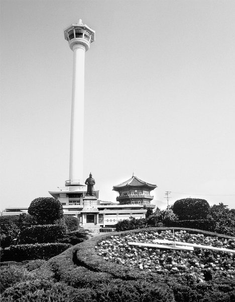

Povijesni pregled
Južna Koreja, službeno poznata kao Republika Koreja, ima bogatu povijest koja se proteže tisućama godina. Od drevnih kraljevstava Goguryeo, Baekje i Silla do modernog doba, Koreja je prošla kroz brojne promjene i izazove.
Tijekom 1945–48. na južnokorejskome teritoriju, pod nadzorom američke vojske, bila je uspostavljena privremena vojna uprava (sjevernokorejski teritorij bio je pod sovjetskim nadzorom; → sjeverna koreja). God. 1948., nakon izbora pod nadzorom UN-a i sastavljanja parlamenta, bio je donesen ustav, a Syngman Rhee izabran za predsjednika; Republika Koreja (Južna Koreja) bila je proglašena 15. VIII. 1948.
Američka vojska povukla se polovicom 1949., a svoje je baze ponovno uspostavila nakon Korejskoga rata (1950–53); sa SAD-om je 1954. ugovorena zajednička obrana. Početkom 1950-ih nastao je spor s Japanom oko otočja Dokdo (Tok Do, japanski Takeshima; poznati i kao Liancourt); 1954. Južna Koreja zauzela je otočje i odbila međunarodnu arbitražu. Syngman Rhee uspostavio je autoritarnu vladavinu; bio je biran za predsjednika 1952. i 1956., a s vlasti je odstupio u svibnju 1960., nakon studentskih demonstracija s više od stotinu poginulih. Obnavljanje parlamentarnoga sustava bilo je zaustavljeno državnim udarom 16. V. 1961; vlast je preuzela vojna hunta, koju je predvodio general Park Chung Hee.
